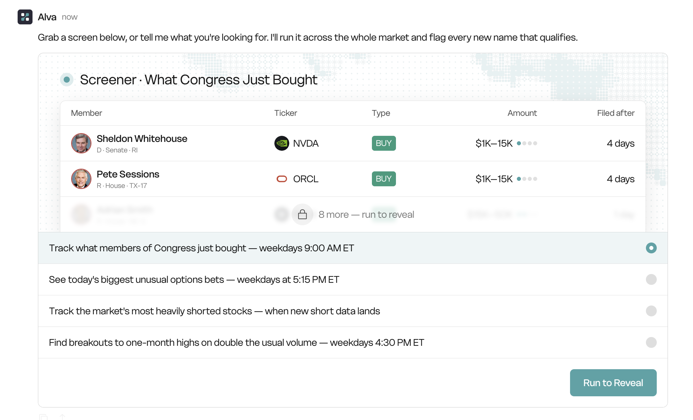
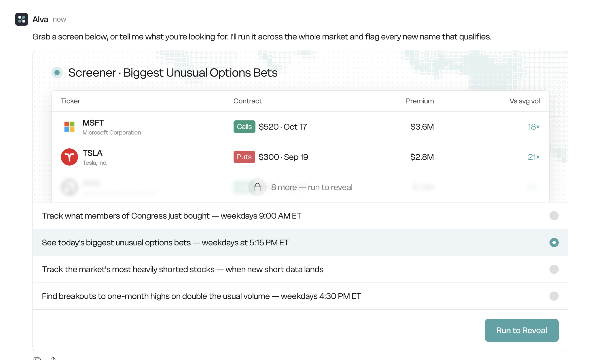
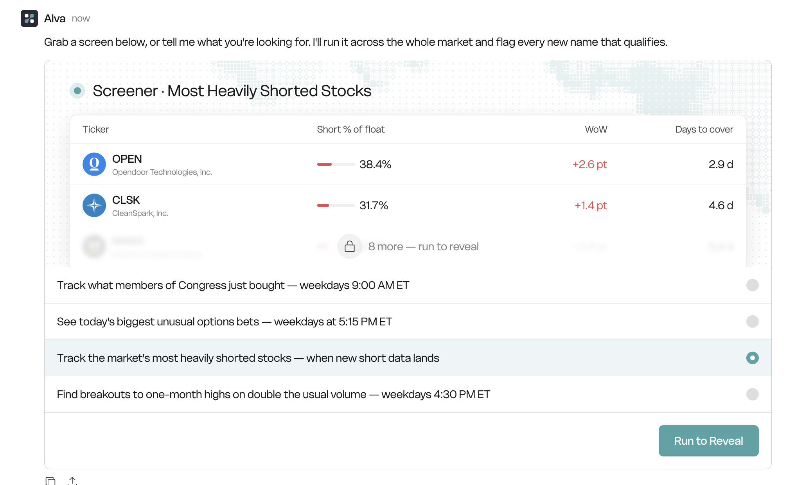
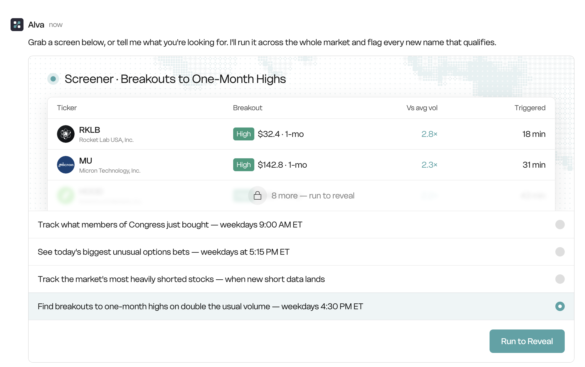

官方 Screener 共有 5 个 Preset。GUI 首次展示最多 10 条，后台保留排序后的前 100 条供用户继续追问。GUI 必须读取结构化结果，不能解析 notify/message 文案，也不能把脚本内部缩写字段直接暴露成长期接口。
ScreenerResultV1 公共外壳，各 Preset 使用独立 Row Schema。| Preset | 当前表达 | 建议表达 | 原因 |
|---|---|---|---|
| Congress | Filed after | Filing delay | 必须锁定为交易日至申报日之间的自然日数，不能与「几天前申报」混淆。 |
| Options | Vs avg vol | Vol / OI | 当前脚本计算的是成交量 ÷ Open Interest，没有平均成交量字段。 |
| Short | WoW · +2.6 pt | Change vs prior · +2.6% | 数据按每月两次结算；当前值是空头数量相对上一期的百分比变化，不是周环比或百分点。 |
| Breakout | Triggered · 18 min | Day change · +4.1% | 这是日线收盘后扫描，当前脚本没有盘中触发时间。 |
公共外壳只表达运行身份、数据日期、结果数量和分页能力。每一行的金融语义由具体 Preset Row Schema 决定；视觉宽度、颜色和排版不进入后台协议。
interface ScreenerResultV1<Row> {
schema_version: 1
preset_id:
| "congress-trades"
| "options-whales"
| "short-squeeze"
| "breakout"
| "divergence"
run_id: string
generated_at: string // RFC 3339，实际运行完成时间
as_of_date: string | null // YYYY-MM-DD，结果所属市场 / 结算日期
qualified_count: number // 截断前的全部合格结果
retained_count: number // 实际保留，0–100
displayed_count: number // 当前响应返回，0–10
has_more: boolean // retained_count > displayed_count
retention_truncated: boolean // qualified_count > retained_count
next_cursor: string | null // 继续追问时由 Agent / API 使用
rows: Array<Row & {
row_id: string
rank: number // 后台最终排序名次，从 1 开始
}>
}| 字段 | 定义 | 示例 | UI 用途 |
|---|---|---|---|
qualified_count | 通过筛选、去重和 freshness 规则后的总量，尚未应用 100 条硬顶。 | 137 | 说明市场中实际有多少条合格结果。 |
retained_count | 保存给后续追问的数量，最大 100。 | 100 | 决定 Agent 后续最多能继续列出多少条。 |
displayed_count | 当前 GUI Block 返回的行数，默认最大 10。 | 10 | 控制初始表格高度。 |
has_more | retained_count > displayed_count。 | true | 生成「继续问 Alva 查看更多」提示。 |
retention_truncated | qualified_count > retained_count。 | true | 明确只有 Top 100 被保留，避免承诺不存在的完整列表。 |
| 命名 | 单位 | 示例 Raw | 示例 Display | 约束 |
|---|---|---|---|---|
*_usd | 美元 | 3600000 | $3.6M | 后台传数字；前端缩写。不要传带货币符号字符串。 |
*_pct | 百分数 | 38.4 | 38.4% | 38.4 表示 38.4%，不是 0.384。 |
*_pp | 百分点 | 2.6 | +2.6 pt | 只有两个百分比直接相减时使用。 |
*_ratio | 无量纲倍数 | 2.8 | 2.8× | 后台不附加 ×。 |
*_date | 日历日期 | 2026-08-06 | Aug 6 | ISO Date，不混入时区。 |
*_at | 时间点 | 2026-08-06T20:30:00Z | 4:30 PM ET | RFC 3339，必须带时区。 |
| 缺失值 | — | null | — | 缺失不能转成 0；0 是有效金融数值。 |
interface InstrumentRef {
symbol: string
name: string | null
logo_url: string | null
market: string | null
}
interface PersonRef {
id: string
name: string
avatar_url: string | null
party: "D" | "R" | "I" | "OTHER" | null
chamber: "HOUSE" | "SENATE" | null
state: string | null
district: string | null
}name、logo_url 和人物资料由共享 Entity Resolver 补全。Automation Script 只需要保留稳定 ID 与 symbol，不能把可变 Logo URL 写进历史 Feed。
| 状态 | 行数 | 用户行为 | 文案来源 |
|---|---|---|---|
| Onboarding teaser | 2 条 Fixture，可有模糊占位 | Run preset | 前端固定营销状态 |
| Real result | 最多 10 条真实结果 | 阅读或继续提问 | 结构化 counts 生成，不解析通知正文 |
| Follow-up | 继续返回 retained rows | 「把剩下的都列出来」 | next_cursor / rank |
| Qualified > 100 | 仍只保留 Top 100 | 可询问 retained list | 明确告知 retention truncation |
一行代表一笔新的国会议员交易申报。用户首先需要知道「谁、什么股票、买卖方向、金额范围、延迟多久申报」。人物身份和金额必须结构化，不能只保留当前的展示字符串。

| Member | Ticker | Trade | Amount | Filing delay |
|---|---|---|---|---|
| Sheldon Whitehouse D · SENATE · RI | NVDA NVIDIA | BUY | $1K–$15K | 4 days |
| GUI 列 | 包含字段 | Raw 示例 | Display 示例 | 规则 |
|---|---|---|---|---|
| Member | member.idmember.namemember.avatar_urlmember.partymember.chambermember.statemember.districtowner_type | DSENATERIMEMBER | Sheldon Whitehouse D · Senate · RI | owner_type=SPOUSE 时在姓名旁显示 Spouse，而不是把 spouse 塞进 issuer 文本。 |
| Ticker | instrument.symbolinstrument.nameinstrument.logo_url | NVDA | NVDA NVIDIA Corporation | Script 只输出 symbol；共享 Resolver 补公司资料。 |
| Trade | side | BUY | BUY Badge | 枚举仅允许 BUY / SELL；未知值返回 null，不猜测。 |
| Amount | amount_min_usdamount_max_usdamount_raw | 100115000 | $1K–$15K | Raw 字符串仅用于审计回退；排序和显示必须用数字上下限。 |
| Filing delay | trade_datefiling_datefiling_delay_days | 2026-07-282026-08-014 | 4 days | 自然日差；Tooltip 可显示 Traded Jul 28 · Filed Aug 1。 |
| Canonical 字段 | 类型 | 定义 | 当前来源 | 状态 |
|---|---|---|---|---|
member.id | string | 稳定的 politician ID | 上游已有 politician_id，当前未持久化 | 补字段 |
member.name | string | 申报关联议员姓名 | who ← reporter / name | 映射 |
owner_type | enum | MEMBER / SPOUSE / DEPENDENT / JOINT / OTHER | 当前仅通过 issuer == spouse 推断 | 规范化 |
instrument.symbol | string | 股票代码 | sym | 已有 |
amount_min_usd | integer|null | 金额区间下限，用于排序 | 解析 amounts | 补字段 |
amount_max_usd | integer|null | 金额区间上限 | 解析 amounts | 补字段 |
trade_date | date | 交易发生日期 | traded | 改名 |
filing_date | date | 申报提交日期 | filed | 改名 |
filing_delay_days | integer|null | 申报日期减交易日期的自然日数 | 由两个日期计算 | 派生 |
filing_delay_days = calendar_days(filing_date - trade_date)
rank order:
1. BUY before SELL
2. amount_min_usd DESC
3. filing_date DESC
4. symbol ASC
display-only diversity:
maximum 2 rows per member in the initial 10-row preview
row_id:
upstream_filing_id
fallback = member.id | symbol | trade_date | side{
"row_id": "congress:example-member-001:NVDA:2026-07-28:BUY",
"rank": 1,
"member": {
"id": "example-member-001",
"name": "Sheldon Whitehouse",
"avatar_url": null,
"party": "D",
"chamber": "SENATE",
"state": "RI",
"district": null
},
"instrument": {
"symbol": "NVDA",
"name": "NVIDIA Corporation",
"logo_url": null,
"market": "NASDAQ"
},
"owner_type": "MEMBER",
"side": "BUY",
"amount_min_usd": 1001,
"amount_max_usd": 15000,
"amount_raw": "$1,001 - $15,000",
"trade_date": "2026-07-28",
"filing_date": "2026-08-01",
"filing_delay_days": 4
}Filed after → Filing delay。politician_id 补全。"$1,001 - $15,000" 字符串。一行代表当日某个 Single-name Ticker 中 Premium 最大的一个期权合约。当前数据足以展示合约、Premium 和 Volume / OI，但不足以声称「相对平均成交量」。

| Ticker | Contract | Premium traded | Vol / OI |
|---|---|---|---|
| MSFT Microsoft Corporation | CALL $520 · Oct 17 | $3.6M | 18× |
| GUI 列 | 包含字段 | Raw 示例 | Display 示例 | 规则 |
|---|---|---|---|---|
| Ticker | instrument.symbolinstrument.nameinstrument.logo_url | MSFT | MSFT Microsoft Corporation | 共享 Instrument Resolver 补全名称与 Logo。 |
| Contract | contract_idoption_typestrike_usdexpiration_date | CALL5202026-10-17 | CALL $520 · Oct 17 | C/P 在 Adapter 中规范成 CALL/PUT。 |
| Premium traded | premium_traded_usd | 3600000 | $3.6M | 这是当日累计 Premium；标题使用 traded，避免被理解成单笔成交。 |
| Vol / OI | volumeopen_interestvolume_oi_ratio | 18000100018 | 18× | open_interest <= 0 时 ratio 返回 null，显示 —。 |
| Canonical 字段 | 类型 | 定义 | 当前来源 | 状态 |
|---|---|---|---|---|
instrument.symbol | string | 标的股票代码 | sym | 已有 |
option_type | enum | CALL / PUT | type = C / P | 规范化 |
strike_usd | number | 行权价 | strike | 改名 |
expiration_date | date | 到期日 | exp | 改名 |
premium_traded_usd | integer | 当日该合约累计 Premium | dayPrem | 改名 |
volume | integer | 当日合约成交量 | dayVol | 改名 |
open_interest | integer|null | Open Interest | oi | 改名 |
volume_oi_ratio | number|null | 成交量 ÷ OI | 前端或 Adapter 派生 | 派生 |
volume_oi_ratio = open_interest > 0
? volume / open_interest
: null
scope:
most recent trading day in source feed
single-name equities only
exclude index / ETF noise set
keep 1 highest-premium contract per symbol
rank order:
1. premium_traded_usd DESC
2. volume DESC
3. symbol ASC
row_id:
symbol | expiration_date | strike_usd | option_type | as_of_date{
"row_id": "options:MSFT:2026-10-17:520:CALL:2026-08-06",
"rank": 1,
"instrument": {
"symbol": "MSFT",
"name": "Microsoft Corporation",
"logo_url": null,
"market": "NASDAQ"
},
"contract_id": "MSFT-20261017-C-520",
"option_type": "CALL",
"strike_usd": 520,
"expiration_date": "2026-10-17",
"premium_traded_usd": 3600000,
"volume": 18000,
"open_interest": 1000,
"volume_oi_ratio": 18,
"as_of_date": "2026-08-06"
}Vs avg vol → Vol / OI。Premium → Premium traded，避免暗示单笔成交。一行代表最新一次 Short-interest Settlement 中的一个股票。数据不是实时流，也不是周度数据；结算日期必须成为卡片级元信息，避免用户把陈旧结算值当成当前盘中信号。

CARD META Settlement: Jul 31 · Source may lag settlement by approximately 8 trading days
| Ticker | Short float | Change vs prior | Days to cover |
|---|---|---|---|
| OPEN Opendoor Technologies | 38.4% | +2.6% | 2.9 d |
| GUI 列 | 包含字段 | Raw 示例 | Display 示例 | 规则 |
|---|---|---|---|---|
| Ticker | instrument.symbolinstrument.nameinstrument.logo_url | OPEN | OPEN Opendoor Technologies | 共享 Resolver 补全。 |
| Short float | short_float_pct | 38.4 | 38.4% | 表示流通股中被做空的比例。 |
| Change vs prior | short_interest_change_pct | 2.6 | +2.6% | 上一结算期至当前结算期的 Short Interest 数量百分比变化，不是百分点。 |
| Days to cover | days_to_cover | 2.9 | 2.9 d | 按数据提供方口径展示；缺失为 —，不回填 0。 |
| 字段 | 类型 | 定义 | 当前来源 | 状态 |
|---|---|---|---|---|
settlement_date | date | Short-interest 所属结算日，也是本 Preset 的 as_of_date | 脚本中已有 settle，但未写入结构化 Row | 补字段 |
generated_at | datetime | Automation 实际运行完成时间 | 公共外壳 | 公共 |
source_lag_note | string|null | 非数值 UI 注释，说明结算数据可能滞后 | Preset 固定 metadata | 新增 |
current contract:
short_interest_change_pct
= upstream change_in_short_interest_percentage
display example: +2.6%
only if previous short-float value is added:
short_float_change_pp
= current_short_float_pct - previous_short_float_pct
display example: +2.6 ptuniverse:
top 250 liquid US names by average daily dollar volume
qualify:
settlement_date == latest available settlement
short_float_pct >= 10
rank order:
1. short_float_pct DESC
2. days_to_cover DESC
3. symbol ASC
row_id:
symbol | settlement_date{
"row_id": "short:OPEN:2026-07-31",
"rank": 1,
"instrument": {
"symbol": "OPEN",
"name": "Opendoor Technologies, Inc.",
"logo_url": null,
"market": "NASDAQ"
},
"short_float_pct": 38.4,
"short_interest_change_pct": 2.6,
"days_to_cover": 2.9,
"settlement_date": "2026-07-31"
}WoW → Change vs prior。+2.6 pt → +2.6%。一行代表某股票在最新日线收盘时突破过去 20 个交易日高点，同时当日成交量至少达到过去 20 日均量的 2 倍。GUI 应展示价格、量比、日涨跌和连续突破天数，不应生成不存在的分钟级触发时间。

CARD META As of Aug 6 close
| Ticker | Breakout | Vol vs 20D avg | Day change |
|---|---|---|---|
| RKLB Rocket Lab USA | 20D HIGH $32.40 | 2.8× | +4.1% |
| GUI 列 | 包含字段 | Raw 示例 | Display 示例 | 规则 |
|---|---|---|---|---|
| Ticker | instrument.symbolinstrument.nameinstrument.logo_url | RKLB | RKLB Rocket Lab USA | 共享 Resolver 补全。 |
| Breakout | price_usdbreakout_window_sessionsreference_high_usdbreakout_margin_pctstreak_sessions | 32.42031.81.91 | 20D high · $32.40 | Reference high 与 margin 可放 Tooltip；streak ≥ 2 时显示 Day N Badge。 |
| Vol vs 20D avg | volume_ratio_20d | 2.8 | 2.8× | 窗口固定为之前 20 个交易日，不含当前日。 |
| Day change | price_change_pct | 4.1 | +4.1% | 当前收盘价相对上一交易日收盘价。 |
| Canonical 字段 | 类型 | 定义 | 当前来源 | 状态 |
|---|---|---|---|---|
price_usd | number | 最新 Session 收盘价 | px | 改名 |
price_change_pct | number|null | 相对前收日涨跌幅 | chgPct | 改名 |
volume_ratio_20d | number | 当前成交量 ÷ 前 20 日均量 | volX | 改名 |
as_of_date | date | 当前 K 线所属交易日 | 脚本中 d 已 append，但未在 feed.def 声明 | 正式声明 |
streak_sessions | integer | 连续交易日触发次数 | streak 已 append，但未在 feed.def 声明 | 正式声明 |
reference_high_usd | number | 前 20 个 Session 的最高价 | 脚本中 hi20 只用于判断，未持久化 | 补字段 |
breakout_margin_pct | number | 收盘价超过 reference high 的百分比 | 可由 price / hi20 派生 | 补字段 |
reference_high_usd = max(high of prior 20 sessions)
average_volume_20d = average(volume of prior 20 sessions)
qualify when:
price_usd > reference_high_usd
volume_ratio_20d = current_volume / average_volume_20d
volume_ratio_20d >= 2
breakout_margin_pct =
(price_usd - reference_high_usd) / reference_high_usd * 100
price_change_pct =
(price_usd - previous_close_usd) / previous_close_usd * 100
rank order:
1. volume_ratio_20d DESC
2. price_change_pct DESC
3. symbol ASC
row_id:
symbol | as_of_date{
"row_id": "breakout:RKLB:2026-08-06",
"rank": 1,
"instrument": {
"symbol": "RKLB",
"name": "Rocket Lab USA, Inc.",
"logo_url": null,
"market": "NASDAQ"
},
"price_usd": 32.4,
"price_change_pct": 4.1,
"breakout_window_sessions": 20,
"reference_high_usd": 31.8,
"breakout_margin_pct": 1.9,
"volume_ratio_20d": 2.8,
"streak_sessions": 1,
"as_of_date": "2026-08-06"
}1-mo → 20D high，直接匹配脚本的 20 个交易日窗口。Vs avg vol → Vol vs 20D avg。Triggered 18 min。当前四张设计稿遗漏了官方的第五个 Preset。Divergence 一行代表一个价格极值与 RSI 极值背离的信号；字段必须明确这是「最近 Pivot」而不是「当前实时价格 / 当前 RSI」。
CARD META RSI(14) · Recent pivot within 5 sessions · As of Aug 6 close
| Ticker | Signal | Signal price | RSI · prior → recent | RSI gap |
|---|---|---|---|---|
| NVDA NVIDIA Corporation | BEARISH Price HH · RSI LH | $182.40 | 72.4 → 66.1 | 6.3 |
| GUI 列 | 包含字段 | Raw 示例 | Display 示例 | 规则 |
|---|---|---|---|---|
| Ticker | instrument.symbolinstrument.nameinstrument.logo_url | NVDA | NVDA NVIDIA Corporation | 共享 Resolver 补全。 |
| Signal | signalprice_patternrsi_pattern | BEARISHHIGHER_HIGHLOWER_HIGH | BEARISH Price HH · RSI LH | 方向用枚举；模式用于解释，不由前端从数值猜。 |
| Signal price | signal_price_usdrecent_pivot_date | 182.42026-08-04 | $182.40 | 这是最近价格 Pivot，不是当前盘中价；Tooltip 显示 Pivot 日期。 |
| RSI | rsi_periodprior_rsirecent_rsiprior_pivot_daterecent_pivot_date | 1472.466.1 | 72.4 → 66.1 | 列名不使用 RSI now；recent 才符合真实含义。 |
| RSI gap | rsi_gap | 6.3 | 6.3 | 始终返回正的强度值，方向由 signal 表达。 |
| Canonical 字段 | 类型 | 定义 | 当前来源 | 状态 |
|---|---|---|---|---|
signal | enum | BULLISH / BEARISH | kind | 改名 |
signal_price_usd | number | 最近价格 Pivot 值 | px | 改名 |
recent_rsi | number | 最近 Pivot 对应 RSI | rsiNow | 纠正语义 |
prior_rsi | number | 前一 Pivot 对应 RSI | rsiPrior | 改名 |
recent_pivot_date | date | 最近 Pivot 日期 | 检测时有日期，但当前未返回 | 补字段 |
prior_pivot_date | date | 前一 Pivot 日期 | 检测时有日期，但当前未返回 | 补字段 |
price_pattern | enum | HIGHER_HIGH / LOWER_LOW | 由 signal 的检测分支确定 | 派生 |
rsi_pattern | enum | LOWER_HIGH / HIGHER_LOW | 由 signal 的检测分支确定 | 派生 |
rsi_gap | number | 背离强度的正值 | 由两个 RSI 计算 | 派生 |
BEARISH:
recent_price_high > prior_price_high
recent_rsi < prior_rsi - 2
prior_rsi >= 65
recent pivot occurred within last 5 sessions
rsi_gap = prior_rsi - recent_rsi
BULLISH:
recent_price_low < prior_price_low
recent_rsi > prior_rsi + 2
prior_rsi <= 35
recent pivot occurred within last 5 sessions
rsi_gap = recent_rsi - prior_rsi
display selection:
target 5 bearish + 5 bullish
fill unused quota from the available side
within each side: rsi_gap DESC, then symbol ASC
freshness:
3-day per-symbol cooldown
row_id:
symbol | signal | recent_pivot_date{
"row_id": "divergence:NVDA:BEARISH:2026-08-04",
"rank": 1,
"instrument": {
"symbol": "NVDA",
"name": "NVIDIA Corporation",
"logo_url": null,
"market": "NASDAQ"
},
"signal": "BEARISH",
"price_pattern": "HIGHER_HIGH",
"rsi_pattern": "LOWER_HIGH",
"signal_price_usd": 182.4,
"rsi_period": 14,
"prior_rsi": 72.4,
"recent_rsi": 66.1,
"rsi_gap": 6.3,
"prior_pivot_date": "2026-07-18",
"recent_pivot_date": "2026-08-04",
"as_of_date": "2026-08-06"
}最稳妥的实现不是让前端直接绑定旧 Feed 缩写，也不是在五个 JS 里复制 UI 逻辑；应在 Feed 与 GUI 之间增加一层版本化 Presentation Adapter，集中处理字段映射、计数、稳定 ID 和实体补全。
Automation JS
├─ structured feed rows · top 100 retained
└─ notify/message · Slack / Telegram / text fallback
Structured feed rows
→ Screener Presentation Adapter · schema_version = 1
→ Entity Resolver · ticker / company / politician
→ ScreenerResultV1
→ GUI Generic Table Block · top 10 initial rows
→ Agent follow-up · cursor over retained rows| 层 | 负责 | 不负责 |
|---|---|---|
| Automation JS | 数据拉取、筛选、freshness、排序、Top 100 持久化、原始数值与日期 | 公司 Logo、列宽、颜色、货币缩写、GUI 文案 |
| Presentation Adapter | 旧字段到 Canonical 字段映射、Schema Version、counts、rank、row_id、缺失值规范化 | 视觉样式和响应式布局 |
| Entity Resolver | symbol → 公司名 / Logo；politician_id → 人物资料 | 筛选和排序 |
| Frontend | Preset 列配置、复合 Cell Renderer、格式化、Tooltip、空态、has_more 提示 | 重新计算金融指标、重新排序、解析通知 Markdown |
| Agent | 用户继续追问时使用 cursor 读取 retained rows | 凭自然语言猜测缺失字段 |
| Renderer | 输入 | 用途 | Fallback |
|---|---|---|---|
InstrumentCell | InstrumentRef | Logo + symbol + company name | 无 Logo 时显示 symbol initials，不生成假图标 |
PersonCell | PersonRef + owner_type | 头像 + 姓名 + 身份副标题 | 无头像时显示姓名首字母 |
BadgeCell | enum + label map | BUY / SELL / CALL / PUT / BULLISH / BEARISH | 未知枚举显示 — 并上报 contract error |
MoneyCell | number / range | $32.40、$3.6M、$1K–$15K | null → — |
PercentCell | number + sign policy | 38.4%、+4.1% | null → — |
RatioCell | number | 2.8×、18× | null → — |
DateMetaCell | date / datetime / duration | Aug 6、4 days、As of close | 保留绝对日期，避免只显示相对时间 |
sym、px、chgPct 等字段。ScreenerResultV1。| 批次 | 范围 | 完成标准 |
|---|---|---|
| Phase 1 · Contract | 冻结本文字段、单位、公式、列标题和示例 Fixture | 产品、FE、BE 三方签字；不写 UI 猜测逻辑 |
| Phase 2 · Backend | Adapter + Entity Resolver 接入 + 必要 JS 补字段 | 五个 Preset 均返回 V1；旧 Feed Fixture 可读 |
| Phase 3 · Frontend | Generic Table Block + 七种 Cell Renderer | 四张现有视觉稿可用真实字段复现；新增 Divergence |
| Phase 4 · Conversation | has_more / cursor / continued list | 10 条首屏后继续追问能按原 rank 返回 11–100 |
| Phase 5 · QA | Contract、Snapshot、空值、超限和响应式测试 | 无单位漂移、无伪 0、无前端重排 |
验收重点不是「表格有没有画出来」，而是同一条结果从 Script、Feed、Adapter 到 GUI 的金融语义和排序是否完全一致。
schema_version=1、稳定 row_id 与从 1 开始的 rank。qualified_count、retained_count、displayed_count 在 0、1、10、11、100、101 条边界值上正确。| Preset | 必须验证 | 禁止出现 |
|---|---|---|
| Congress | 金额数字区间、自然日 filing delay、2 rows/member 只影响初始展示 | 把「4 days」解释成 filed 4 days ago |
| Options | Vol/OI 公式、OI=0 空值、1 contract/symbol | 把 Vol/OI 标成 Vs avg vol |
| Short | latest settlement、change vs prior%、settlement meta | WoW、pt、缺失值回填 0 |
| Breakout | prior 20 sessions、2× volume、reference high、streak | 无来源的 Triggered minutes |
| Divergence | recent/prior pivot、方向公式、5:5 balance、3-day cooldown | 把 pivot RSI 命名为 current RSI |
Qualified：完成筛选、去重与 freshness 规则后仍合格的结果。
Retained：为继续追问持久化的排序结果，当前硬顶 100。
Displayed：本次 GUI Block 实际返回的行，初始硬顶 10。
Open Interest · OI：仍未平仓的合约数量，不等同于平均成交量。
Days to cover：Short interest 相对于平均日成交量的覆盖天数。
Settlement date：Short-interest 数据所属结算日，不等同于 API 返回或通知发送日。
Pivot：检测窗口内用于比较的价格 / RSI 局部极值点，不保证发生在当前 Session。
Percentage point · pp：两个百分比直接相减所得的差；与百分比变化率不同。
internal/automation/automationflow/screener_preset.go · 五个官方 Preset 注册。scripts/screener/congress-trades.js · who / sym / side / amounts / issuer / traded / filed。scripts/screener/options-whales.js · strike / type / exp / dayPrem / dayVol / oi。scripts/screener/short-squeeze.js · pctFloat / daysToCover / chgPct / settlement。scripts/screener/breakout.js · px / chgPct / volX / d / streak / hi20。scripts/screener/divergence.js · kind / px / rsiNow / rsiPrior 与背离筛选条件。